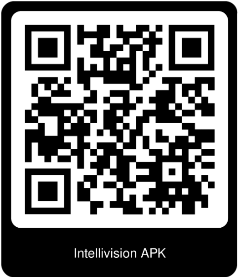

Manual de Usuario IntelliVision
Esta guía te ayudará a utilizar todas las funciones disponibles en la aplicación.
Requisitos Previos
- Un dispositivo Android 4.1 o superior con cámara estándar
- Acceso a internet para la sincronización de datos y el uso de GPS
- Micrófono habilitado para reconocer los comandos de voz
Instalación
- Descarga la aplicación IntelliVision desde el QR
- Instala la aplicación en tu dispositivo móvil
- Asegúrate de otorgar los permisos necesarios:
- Acceso al GPS
- Uso del micrófono
- Acceso a contactos y almacenamiento
- Acceso a cámara
Pantalla de Inicio
Opciones Disponibles
- Decir "VISION": Activa la aplicación y verifica el estado del servicio
- Botón "CONTACTO": Abre la lista de contactos favoritos
- Botón "CÁMARA": Inicia la detección de objetos
- Botón "RUTA": Abre la pantalla para gestionar rutas y navegación
-
Listado de comandos: Se muestra al pulsar el botón "VER LISTADO DE COMANDOS"
Solución de Problemas
No escucho respuesta tras decir un comando:
- Verifica que el volumen de tu dispositivo esté activado
- Confirma que tu conexión a internet sea estable
La aplicación no responde a los comandos:
- Asegúrate de haber otorgado permisos de micrófono
- Habla claramente y verifica que no haya ruido de fondo
